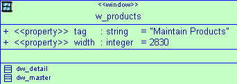

Before you generate a PowerBuilder application from a class diagram, you can check whether or not the application model is well defined. For more information about checking the validity of a class diagram, see "Checking the OOM model".
Plug-in options
The Plug-in Options dialog box lets you set automatic synchronization between a PowerBuilder target and a linked OOM. It also lets you reload the linked OOM automatically when you open the PowerBuilder workspace containing the linked target. When you set these options, they are set automatically for all subsequent PowerBuilder sessions. By default, the automatic synchronization option is set to false and the automatic reload option is set to true.
Synchronization is one-way only: changes that you make in the class diagram are not automatically reflected in the linked PowerBuilder object. The PowerBuilder target must be generated again to update it with changes that you make to the OOM. If automatic synchronization is set to true and the linked class diagram is not open in the background when you make a change to a PowerBuilder object, the class diagram opens automatically to show the class that is abstracted from the new or modified PowerBuilder object.
Automatic synchronization is not activated for copy, move, or import operations. It is activated for additions, deletions, and attribute modifications.
 Last opened versus last linked OOM file A PowerDesigner general option lets you open the most recently
used OOM file rather than the last linked OOM file for a specific
PowerBuilder target. If you set this value for the plug-in, you
also set it for PowerDesigner and vice versa. This option is accessible
from the Tools>General Options menu of the plug-in, which
is enabled whenever a class diagram is open. You can set this option
to false to avoid loading an OOM file that has nothing to do with
the PowerBuilder targets that you open.
Last opened versus last linked OOM file A PowerDesigner general option lets you open the most recently
used OOM file rather than the last linked OOM file for a specific
PowerBuilder target. If you set this value for the plug-in, you
also set it for PowerDesigner and vice versa. This option is accessible
from the Tools>General Options menu of the plug-in, which
is enabled whenever a class diagram is open. You can set this option
to false to avoid loading an OOM file that has nothing to do with
the PowerBuilder targets that you open.
For more information about generating PowerBuilder targets or objects from an OOM, see "Generating PowerBuilder objects".
 To set plug-in options
To set plug-in options
Open a class diagram in the PowerBuilder painter area.
Select Tools>Plug-in Options from the PowerBuilder menu or select the Plug-in Options button on the plug-in View toolbar.
The Plug-in Options dialog box displays.
Click in the row for the option you want to change and select the value you want from the drop-down list that displays in the clicked row.
Click OK.